Rendered art + puzzle wireframes · Chapter 1 review
Chapter 1 — Alisha & Fiona
One chapter, five playable levels. The Attic is the prologue. Chapter 1 covers their meeting, palace visit, rescue, message delivery and crossing the magical gate. Chapter 2 is the journey home.
Read top to bottom: cutscene art → proposed puzzle → closing art. Use the permanent image codes C1-01 through C1-22, plus lettered additions such as C1-06A and C1-10B for feedback (for example, “C1-16: move the dog”). Click an image for full resolution or its code for a direct link. Codes identify images, not levels; revisions keep the same code. Puzzle maps remain untested proposals. Dialogue and action notes are separated. The ending remains awaiting review.
Story review: follow the images and the boxes beneath them for dialogue and story action. Dialogue is labelled separately from action notes. Puzzle maps describe gameplay proposals; they are not extra dialogue.
Visual rules throughout: hidden idle grid; outlines while selecting/moving; separate Alisha and Fiona sprites; character speech bubbles dismissed by tapping the bubble itself. Comics: one image/text beat at a time. These strips show the whole sequence only for review.
Level 1 · meeting / three-merges and five-for-two
Meet Fiona
Alisha throws from a concrete tee pad down the fairway toward a distant basket.
Revised draft v2 — awaiting review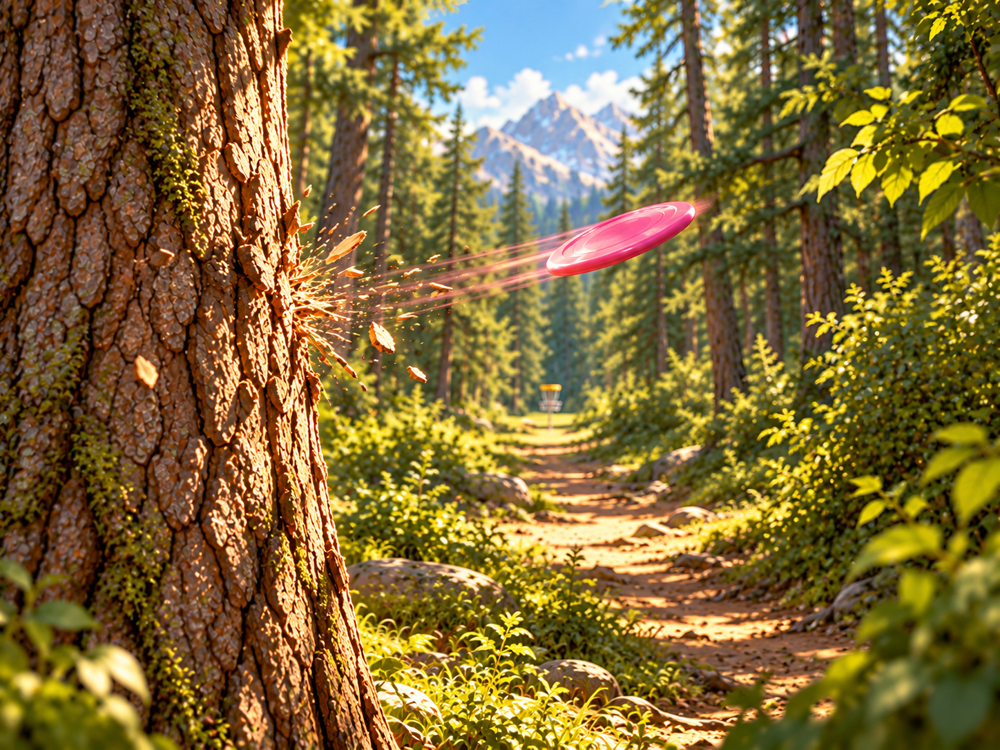
Alisha: “Stupid tree!”
Revised draft v2 — awaiting reviewProposed board · small clearing
Goal: make G3 to work through the woods toward the lost disc. Alisha has not seen or met Fiona yet; reveal her only after completing this puzzle.
Reuse: Sprouting Grove’s small pair-and-lone layout; Crystal Fives’ five-for-two idea; Hidden Hollow’s forgiving five-merge setup.
Two short batches in sequence. First merge earns the G2 used by the next batch. Make a mistaken three-merge visibly recoverable with Undo; do not copy Crystal Fives’ two hidden failure traps. Exact board counts/placement need rules verification.
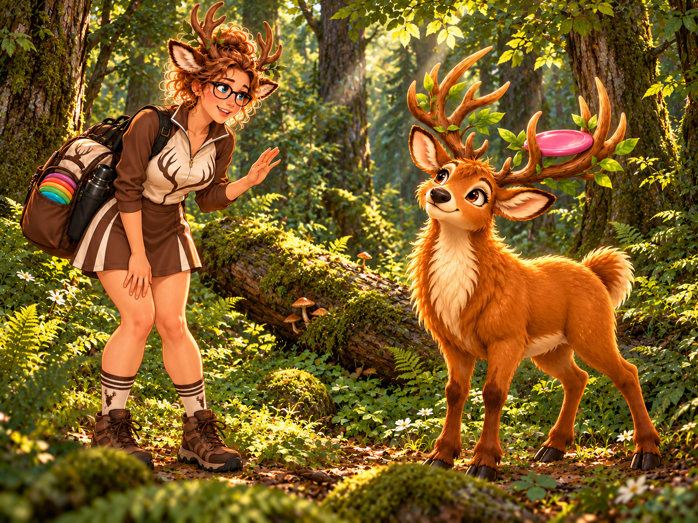
Alisha: “Oh! I’m so sorry.” Fiona: “Is this yours?”
Revised draft v2 — awaiting review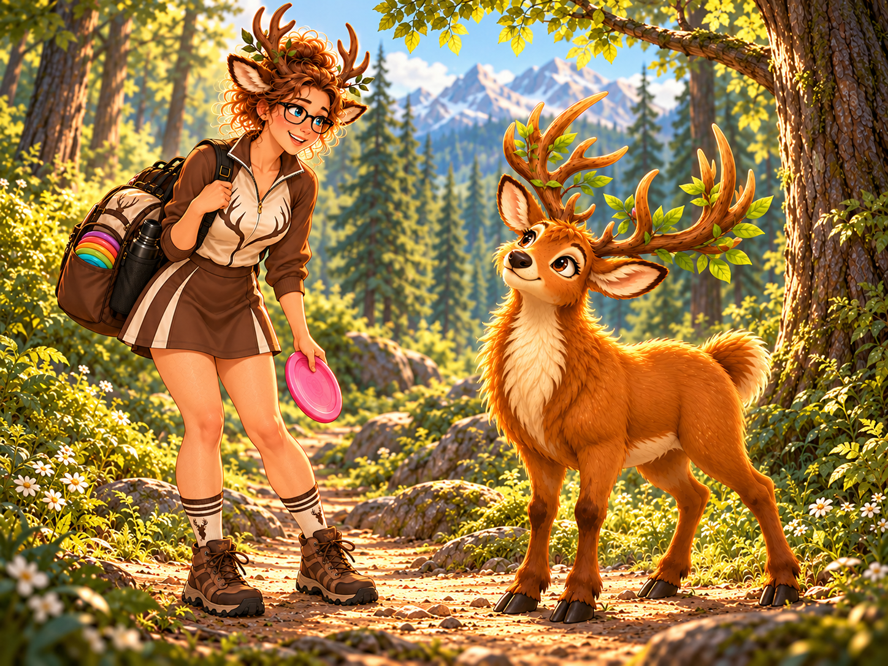
One line per tap; reuse this image.
Alisha: Thanks. Usually I aim for the basket.
Fiona: Should I be flattered?
Alisha: I’m Alisha.
Fiona: Fiona.
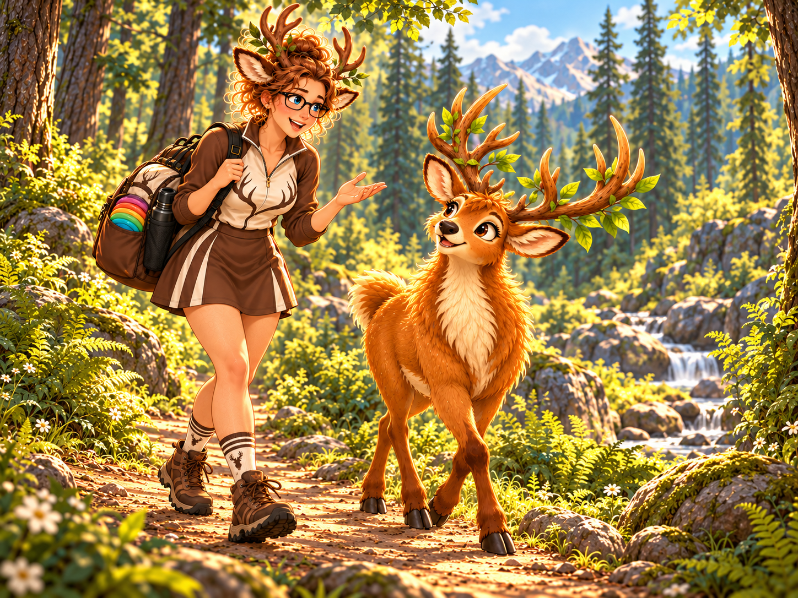
One line per tap; reuse this image.
Alisha: Were you heading somewhere before I interrupted?
Fiona: The Crystal Palace. I have a message to deliver.
Alisha: I’ve never been there. Would you mind some company?
Fiona: Not at all.
Alisha: Let me put this away before I hit anything else.
Level 2 · exploration / hidden clearing / layered unlocks
The woodland trail
Proposed in-game dialogue · one line per tap
Alisha: “Do you live around here?”
Fiona: “A little farther north. You?”
Alisha: “The village. I come out here to play when I can.”
Fiona: “Is hitting trees part of the game?”
Alisha: “Ideally, I hit the basket and nothing else.”
Fiona: “Still, I’m glad you stopped to say hello.”
Alisha: “Technically, my disc stopped to say hello first.”
They reach another basket. Alisha throws again; the disc veers right into an old weakened tree. It wobbles, falls across the clearing and crushes the tool shed. The first tree in level 1 was healthy and remains standing.

Proposed in-game dialogue · one line per tap
Alisha: “There’s the next basket.”
Fiona: “Shall I stand back?”
Alisha: “You’re fine beside me.”
Scene/action notes: the throw veers right. Continue to C1-06, then C1-06D; four images total before the puzzle.
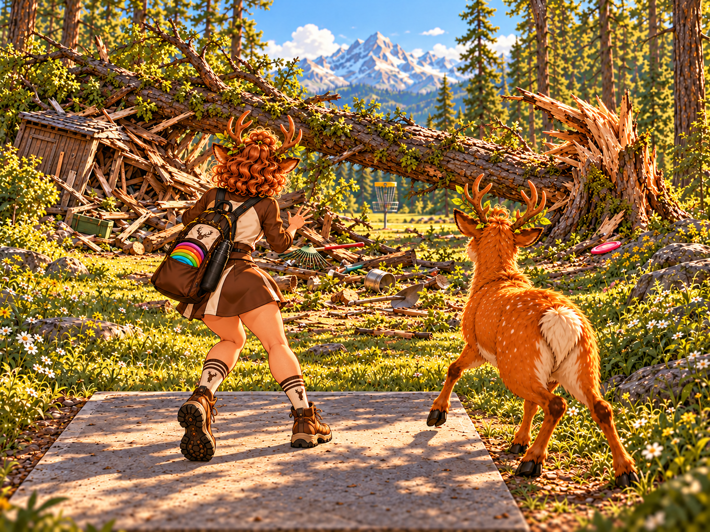
Scene/action notes: the tree falls and crashes onto the tool shed.
Proposed in-game dialogue · one line per tap
Alisha: “Not another tree.”
Fiona: “Alisha. Move back.”
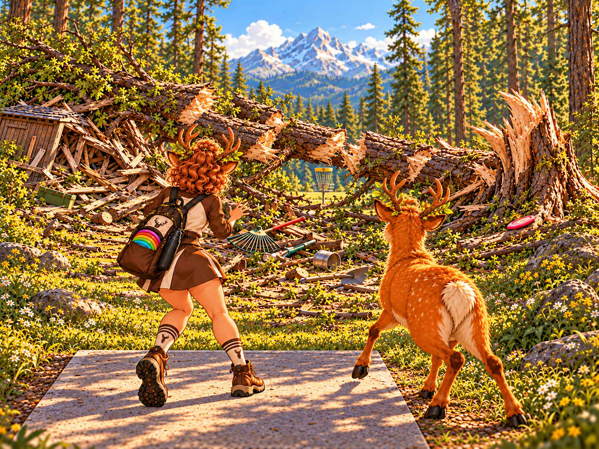
Scene/action notes: The trunk splits into large recognizable sections; branches and tools block the path. The fallen-tree silhouette remains visible.
Proposed in-game dialogue · one line per tap
Alisha: “…That wasn’t supposed to happen.”
Fiona: “I gathered.”
Alisha: “We can’t leave the path like this.”
Fiona: “Let’s start with the branches.”
Proposed map · four clearings (target: 3–5)
Opens after both cleanup goals are complete.
Branches → gathered bundles → trimmed logs → T4 stacked logs.
Clearing branches exposes shed wreckage and scattered tools. Loose tools → bundles → sorted sets → T4 tool chest.
Short merge objective opens clearing 2. Pan upward as the trail unfolds.
Read bottom → top. Only the starting clearing is playable on entry. Hidden clearing contents and shape stay concealed until revealed.
Goal: open the north trail by completing objectives in different clearings.
New lessons: exploring rooms, revealing a hidden clearing, and two recorded room completions opening one onward gate. Introduce these in sequence, rather than all at once.
Reuse: Hidden Hollow’s staged rooms, Hidden Cache’s concealed pocket, Crystal Palace’s persistent task symbols, and Songbird Chorus’ short merge chains.
Cleanup goals: one T4 tool chest and one T4 stack of logs. These are merge results; no new chest-opening recipe. Living plants remain scenery. Exact inventories need validation.
No resource transfer between independent rooms. Multi-room unlocks depend on recorded objectives, not carrying ingredients across boundaries. Authored inventories and combined recipe/region support still need verification.
Mid-level scene: show C1-06B only after the hidden depot wreckage is revealed by the puzzle. Return to the same board afterward to finish its objective and unlock the north trail.
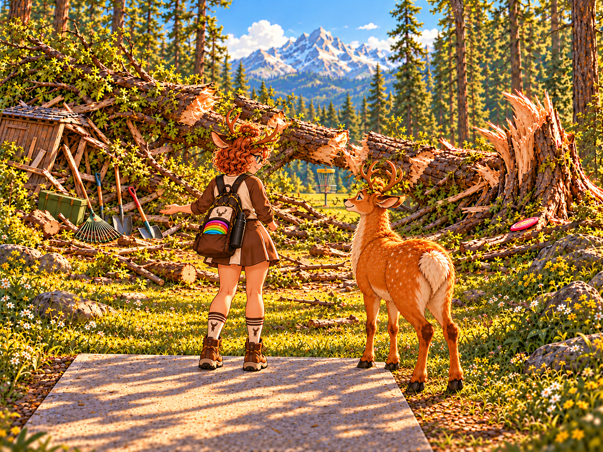
Proposed in-game dialogue · one line per tap
Alisha: “There’s more underneath.”
Fiona: “More tools?”
Alisha: “Yes. Some of the shed’s still under these branches.”
Fiona: “I’ll clear this side.”
Alisha: “I’ll sort what we’ve found.”
Closing: their work is done; they continue together. The public path is usable again, although a few twigs and the damaged shed remain.
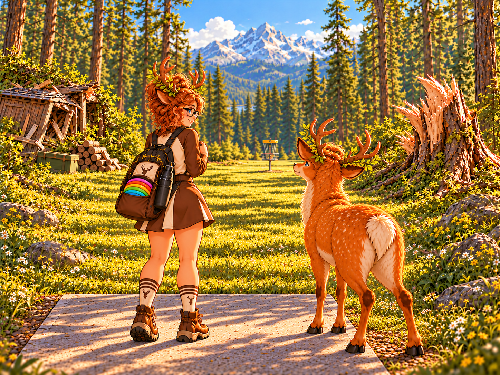
Proposed in-game dialogue · one line per tap
Alisha: “It’s not perfect, but the path’s clear.”
Fiona: “People can get through again.”
Alisha: “That’s what matters.”
Fiona: “Shall we?”
Alisha: “Let’s go.”
Level 3 · larger multi-room approach / character placement
The palace entrance
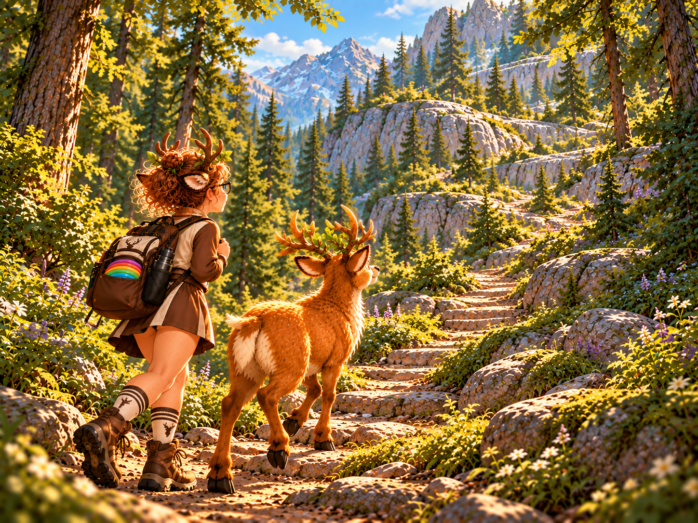
Proposed in-game dialogue · one line per tap
Alisha: “You’ve been here before?”
Fiona: “Yes. There’s a pressure plate outside the entrance. Stand on it, and the doors open.”
Alisha: “Where is it?”
Fiona: “Past these terraces. There used to be a clear path.”
Alisha: “I’ll keep my discs in the bag this time. No more accidents.”
Proposed map · six rooms (target: 4–6)
Palace entrance + character plate. Revealed only after the upper approach is completed.
Two branch symbols open this room. Its short final objective reveals the forecourt.
Merge + item marker → west symbol.
Reveal a pocket, finish objective → east symbol.
Opens both terraces; complete them in either order.
First objective opens the northbound path.
Read bottom → top. This is one connected level, not six separate levels. Numbers and labels are review aids, not spoilers shown to the player.
Goal: work north through a larger map, discover the palace entrance, then open it with Alisha.
Multi-room mechanism: west and east room completions light separate symbols; both are required to open the upper approach. Use permanent tasks/checkpoints from the original Crystal Palace.
Final interaction: reveal the forecourt and plate only near the end. Dismiss Alisha’s bubble, then drag her onto the accessible character plate. No trap.
Proposed rule: character placement permanently opens the entrance and clears Undo. Show the opening before the entry cutscene; Retry restores the level.
Reuse existing gate/reveal/camera patterns. Keep individual room chains shorter than the original large palace map; the challenge is the progression across rooms. Final dimensions and inventories are still proposals.
Mid-level terrace junction: C1-08A. The entrance remains concealed. C1-08B belongs only after the final forecourt reveal, before placing Alisha.
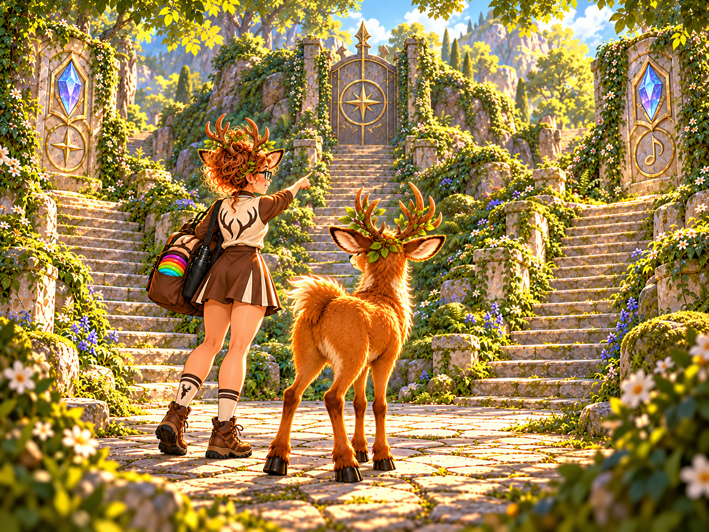
Proposed in-game dialogue · one line per tap
Alisha: “Which way?”
Fiona: “The entrance is above us, through that gate.”
Alisha: “And it’s locked.”
Fiona: “See the symbols? There’s one here, and another across the terrace.”
Alisha: “So we need to sort out both sides.”
Fiona: “Then we can reach the entrance.”
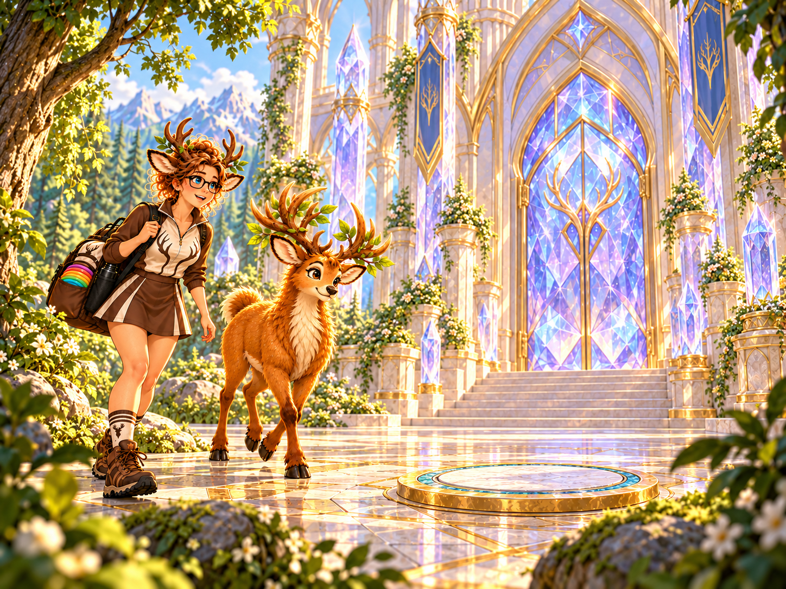
Proposed in-game dialogue · one line per tap
Fiona: “There. Just ahead of the doors.”
Alisha: “That little plate opens all of this?”
Fiona: “It did last time.”
Alisha: “How long ago was that?”
Fiona: “Long enough for the path to disappear, apparently.”
Alisha: “Well, we’ve found it now.”
On-board Alisha bubble: “I can stand on that plate.”
Tap this bubble to continue. Board actions pause; dismissal never clicks through. Then highlight Alisha and her destination.
Closing cutscene: plate depresses → palace entrance opens → Alisha and Fiona enter together. No trap here. This safe demonstration establishes the action used in the next level.
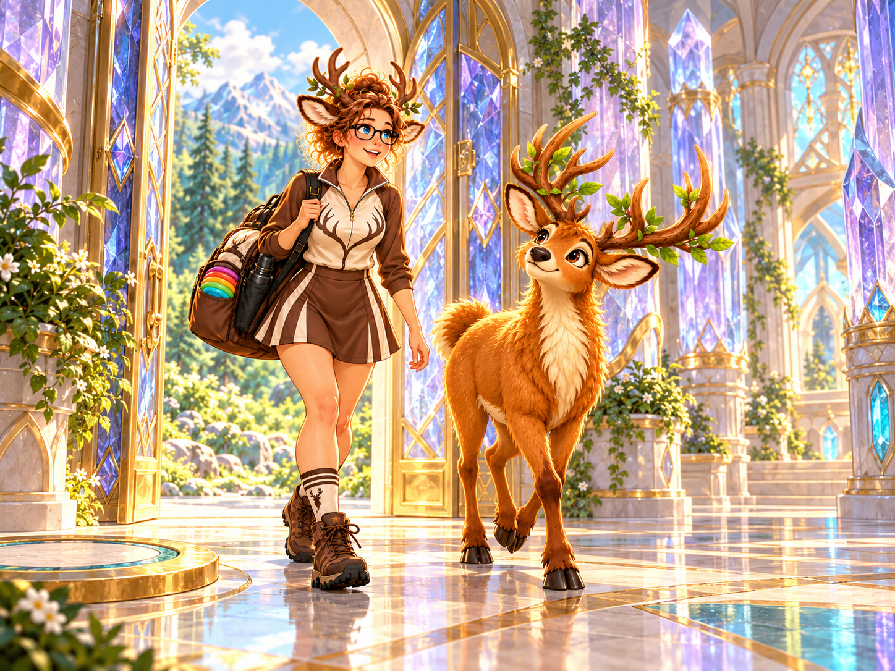
Proposed in-game dialogue · one line per tap
Alisha: “Do I need to stay on the plate?”
Fiona: “No. The doors will stay open.”
Alisha: “That was actually kind of fun.”
Fiona: “Opening a door?”
Alisha: “You have to admit, it’s a fun way to open one.”
Fiona: “Come on. Wait until you see inside.”
Level 4 · palace rescue / combine learned skills
The crystal room
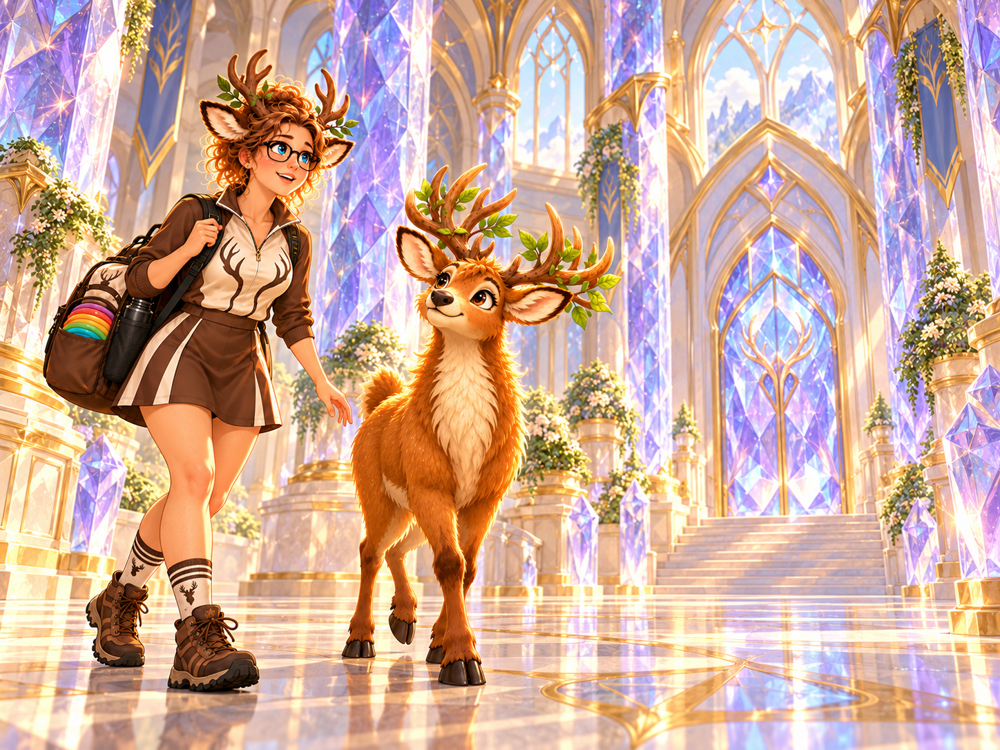
Proposed in-game dialogue · one line per tap
Fiona: “What do you think?”
Alisha: “It’s amazing.”
Fiona: “Worth the walk?”
Alisha: “Even with the cleanup.”
Alisha: “All right. Where do we deliver your message?”
Proposed map · seven rooms (target: 6–8)
After the rescue, one short cooperative finish reaches the recipient’s door.
Both branch symbols unlock this room. A final crystal-and-song objective releases Alisha.
Prepare ingredients → craft a fixed-reward container → use its contents → release symbol 1.
Reveal hidden resources → longer merge chain → exact item marker → release symbol 2.
Revealed from the gallery. Placing Alisha opens the rescue wing but closes her partition. She remains here, able to talk.
A longer merge chain reveals the plate room. Show the reveal and Alisha’s speech bubble before placement.
A short familiar objective opens access to the gallery.
Rooms 4 and 5 can be completed in either order. Their symbols open room 6; they do not free Alisha immediately. Room 3 stays visible during the rescue.
Goal: a substantial palace puzzle, then a reunion and route to the message recipient.
Reuse: Crystal Palace’s hub, permanent branch tasks and multi-item final objective; Hidden Cache’s concealed resources; Rune Gates’ exact markers. Workshop crafting reuses familiar fixed rewards, subject to verifying recipe/region support.
Variety: entry objective, gallery reveal, character plate, workshop crafting, archive resource discovery, final release mechanism, and a brief cooperative finish. Avoid seven copies of the same merge chain.
Story: Alisha observes and offers clues between major steps. Fiona works outside; no second controllable character is required. Clearing the crystal chamber opens the partition, then the antechamber follows after the reunion.
Trap placement is a checkpoint. No new ingredient families or new puzzle system solely for one room. Exact inventories, room boundaries and release conditions remain to be tested.
Alisha: “Which way?”
Fiona: “Through the gallery. The room we want is beyond it.”
Fiona: “This door was open last time.”
Alisha: “Is there another way around?”
Fiona: “Not one I know.”
Alisha: “Let’s have a look.”
Fiona knows the visitor route, not hidden palace machinery. The merge puzzle reveals a side room she has never seen.On-board scene references: C1-10A and C1-10B illustrate the reveal and trap. Gameplay still reveals the room, presents the dismissible bubble and lets the player place Alisha. These are art/staging references, not extra interruptions before the reunion.
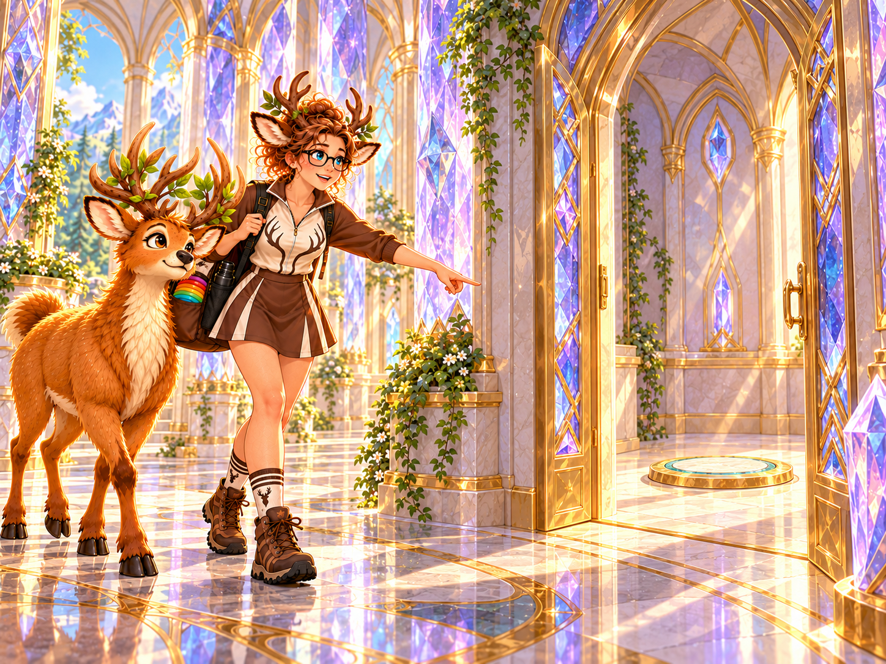
Proposed in-game dialogue · one line per tap
Fiona: “I haven’t seen this room before.”
Alisha: “Oh, that looks like a pressure plate in that room. I should go stand on it.”
Fiona: “Does it open that door across the gallery?”
Alisha: “Let’s find out.”
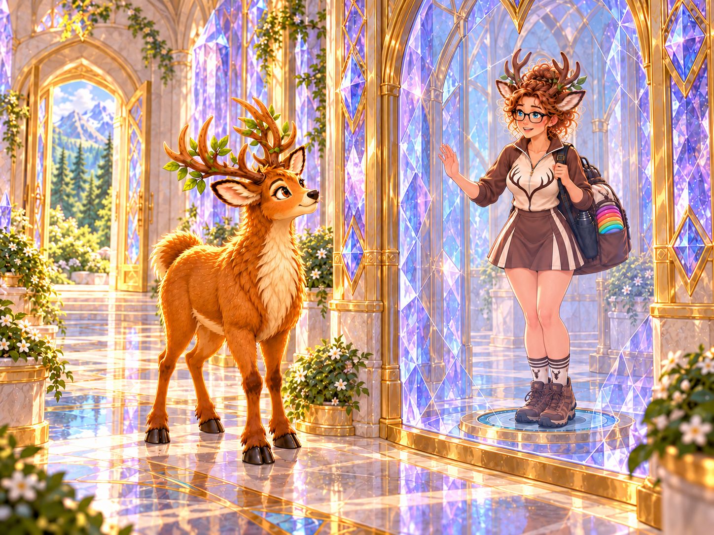
Proposed in-game dialogue · one line per tap
Alisha: “Whoa! What happened?”
Fiona: “Can you step off?”
Alisha: “I did. It’s still closed.”
Fiona: “There must be a release out here.”
Alisha: “I’ll look on this side.”
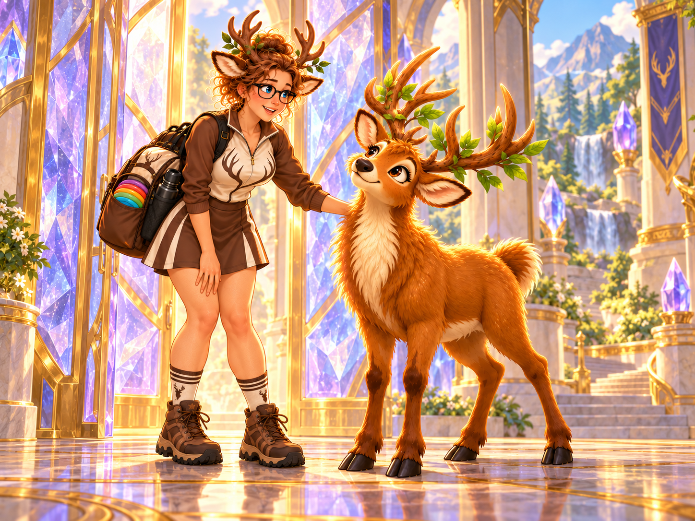
On the board first, Alisha still behind the partition · on-board bubble
Fiona: “I think I found the door release. Is it opening?”
The partition opens on the board and Alisha steps out beside Fiona; then this picture.
Proposed in-game dialogue · one line per tap
Alisha: “I’m free!”
Fiona: “Good. Let’s avoid any more pressure plates.”
Alisha: “Agreed. Now, about that message…”
Level 5 · delivery / dog pursuit / gate ending
Beyond the gate
ENDING STILL TO REVIEW. Existing draft below; dialogue and motives have not been approved. Review from message delivery through the gate closing and the other gates activating.
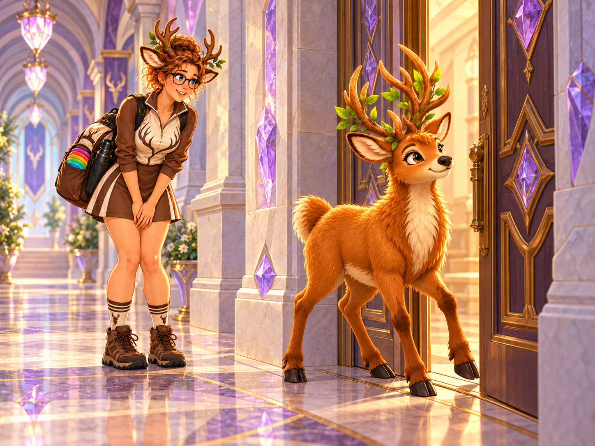
Fiona goes inside; Alisha waits outside.
New draft — awaiting review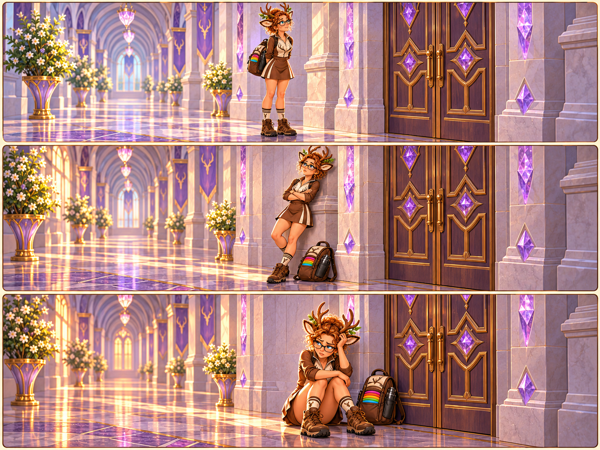
Alisha waits alone outside the closed message-room door and grows restless: standing, then leaning on the wall, then sitting on the floor.
Three moments in one picture, revealed top to bottom, one per tap, each with its line.
Approved in-game dialogue · one line per tap
Alisha: “Fiona shouldn’t be much longer…”
Alisha: “Any minute now.”
Alisha: “Okay, maybe more than a minute.”
New draft — awaiting review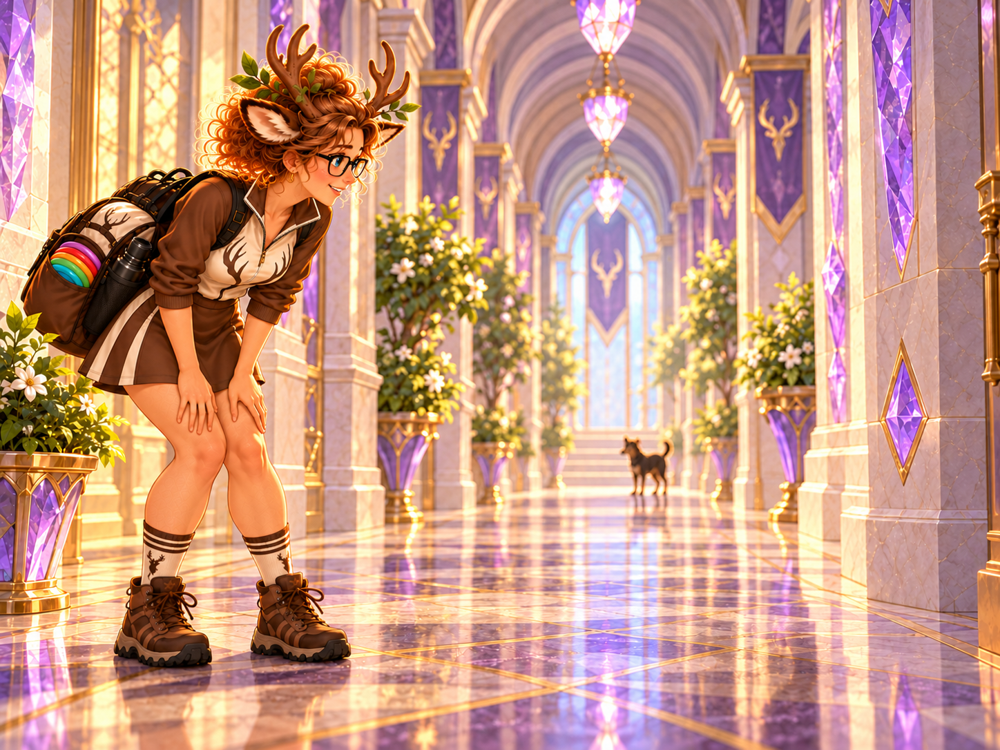
Alisha sees a familiar-looking dog while waiting.
New draft — awaiting review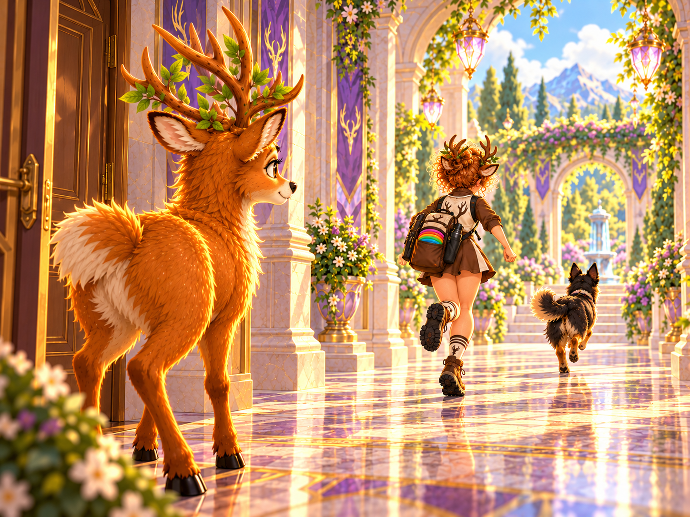
Fiona emerges and sees Alisha following the dog.
Approved in-game dialogue · one line per tap
Fiona steps out just in time to see Alisha hurry after the dog.
New draft — awaiting reviewProposed route · palace interior to walled grove
Fiona delivers the message. Alisha spots the dog; Fiona emerges and follows.
Familiar song merge chain opens the outer door.
Clear a short item objective to reach the garden passage. First view of the palace grounds.
Reveal the route through the greenery. Glimpse the dog ahead; no timed chase.
Old stone arch among roots and plants, paved ground, and a narrow floor slot. Catching up with the dog starts the ending.
Goal: follow the dog from the recipient’s room through the palace and outside into its enclosed grove.
Pacing: five connected spaces, with short puzzles in the gallery, courtyard and garden passage. The landing and grove are story spaces, not extra full puzzles. Lighter than the seven-room rescue, but a real route rather than two tiny rooms.
Reuse: Rune Gates’ sequential passages, Hidden Cache’s concealed destination and Faraway Grove’s spatial progression/camera movement. Keep the merge objectives varied and familiar.
Setting: the warp gate belongs to an old grove within the palace grounds. Move from stone interior to open courtyard to greenery, retaining walls so the destination reads as part of the palace.
No chase engine, new recipe or disc-slot gameplay. The slot activation and crossing remain cutscene events. Exact room objectives are proposals.
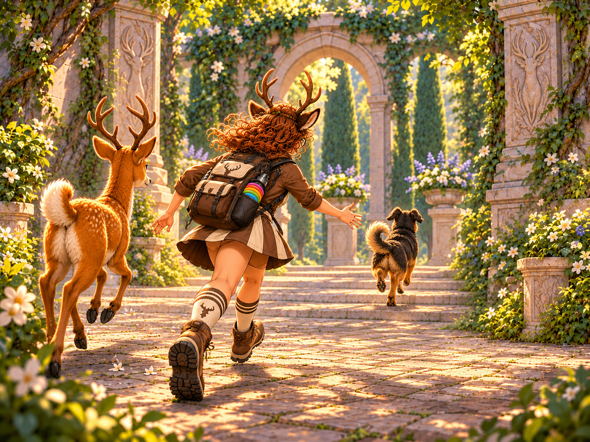
Seen from behind, Alisha runs after the dog into the walled grove, Fiona beside her; the dog has its back to them.
Proposed in-game dialogue · one line per tap
Alisha: “Cookie! There you—”
The dog turns.
New draft — awaiting review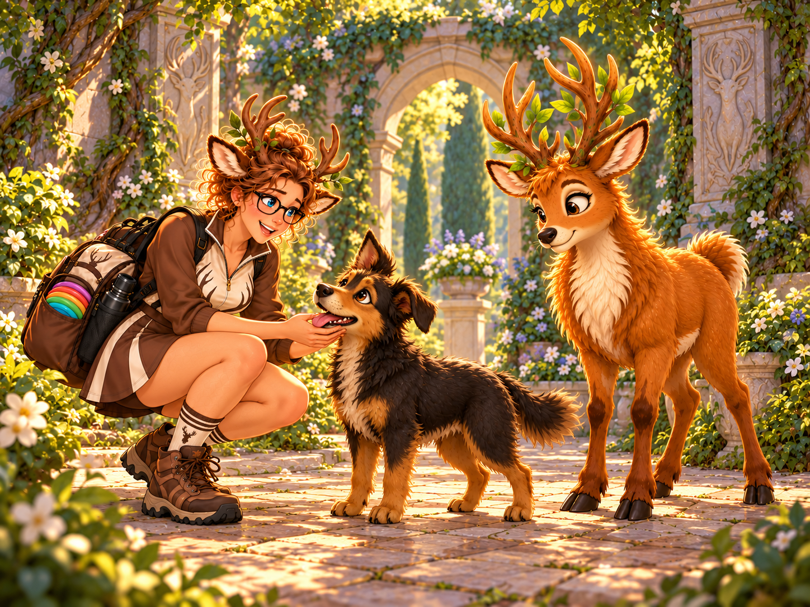
Alisha crouches to greet the dog in the walled palace grove; Fiona looks on.
Proposed in-game dialogue · one line per tap
Alisha: “Oh. You’re not Cookie.”
Fiona: “A friend of yours?”
Alisha: “Not this one, apparently.”
New draft — awaiting review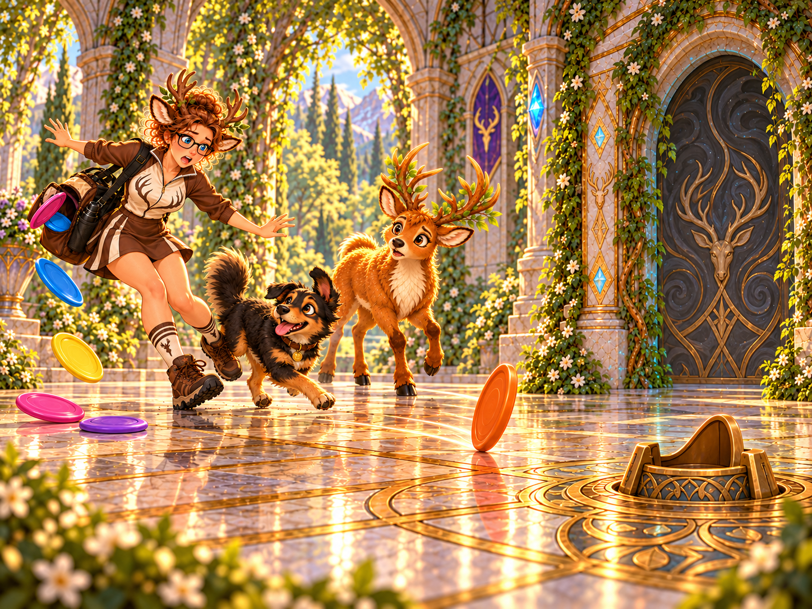
The dog knocks Alisha off balance; discs scatter from her bag. In the wider view, the orange disc rolls upright on its edge toward the empty mechanism. The gate is not open yet.
Proposed in-game dialogue · one line per tap
The dog races off, catching Alisha off balance as it darts past.
Fiona: “Are you all right?”
Alisha: “I think so. My discs, though…”
The orange disc rolls toward the mechanism.
Alisha: “Oh, come on. Not that way.”
New draft — awaiting review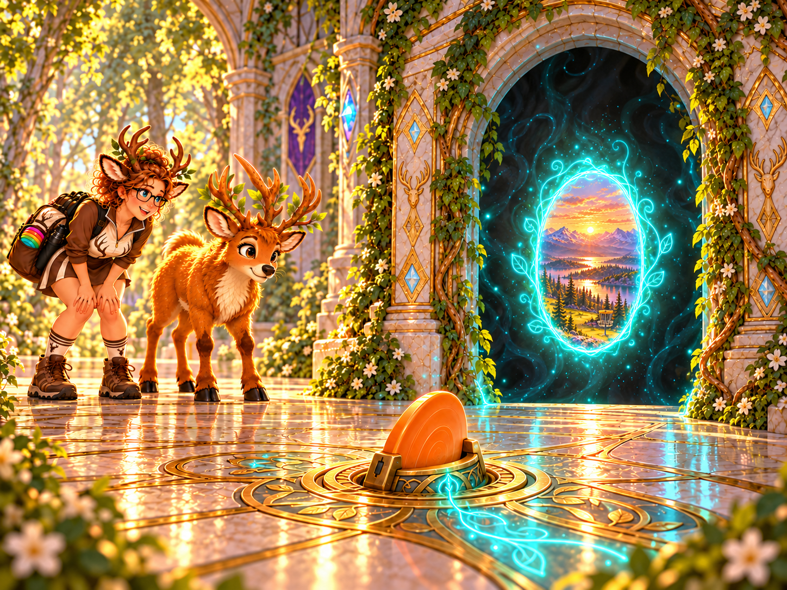
Wider view: the disc engages the fitted rune-key socket and the gate begins to open. A small oval opening begins expanding inside the same rounded arch as C1-18, with no top jewel. It reveals a first glimpse of Ridgeview’s hilltop, lake and basket.
Proposed in-game dialogue · one line per tap
Fiona: “Did your disc just open that?”
Alisha: “I definitely didn’t aim for it.”
Fiona: “What’s on the other side?”
New draft — awaiting review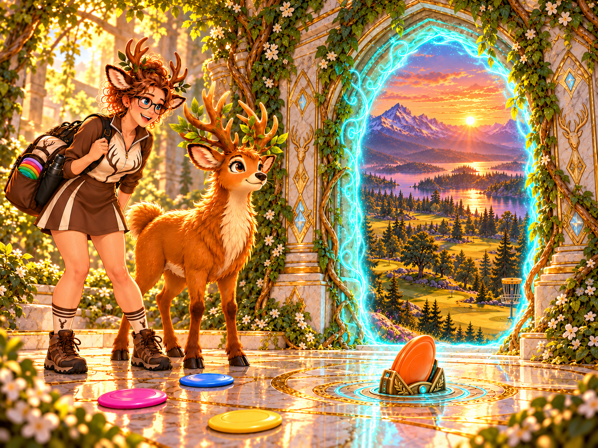
Scene/action: the opening expands to reveal the hilltop course. They decide to cross together.
Proposed in-game dialogue · one line per tap
Alisha: “Wait. Is that Ridgeview?”
Fiona: “Yes. Have you been?”
Alisha: “No! I’ve wanted to play there for years.”
Fiona: “Your village is a few hours’ walk from there.”
Alisha: “Have you got time for a round?”
Fiona: “I’ve delivered my message. I’ve got time.”
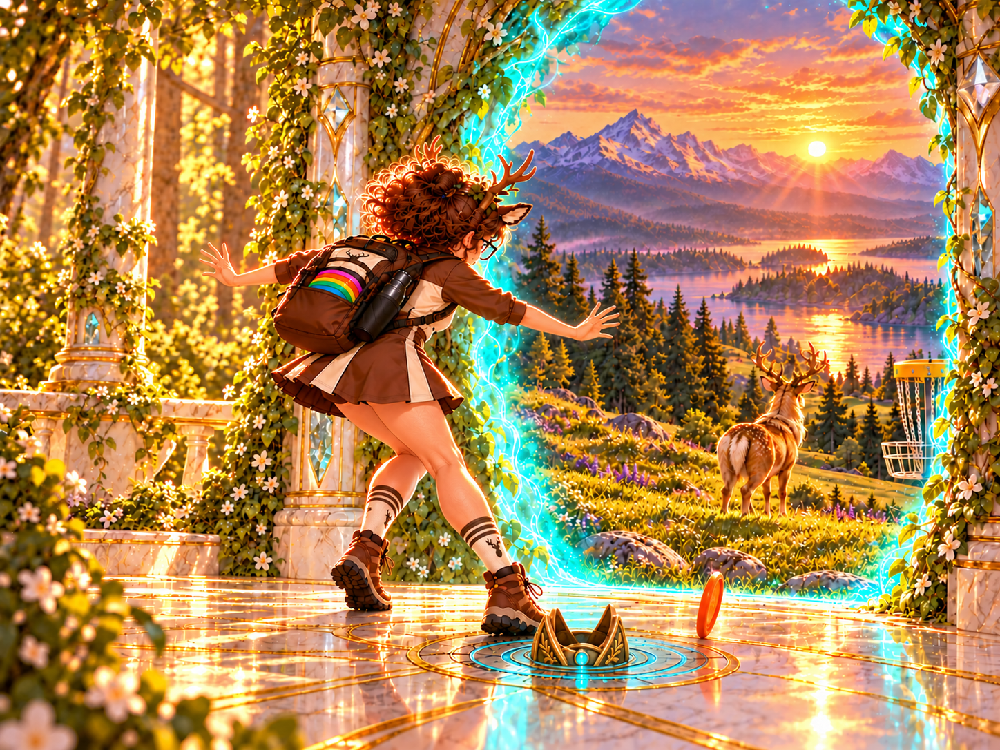
The spare discs are packed in her bag. Fiona crosses first. As Alisha follows, her boot catches the raised mechanism and she stumbles forward. The jolt ejects the disc toward the gate. It rolls through ahead of her.
Approved in-game dialogue · one line per tap
Alisha catches her foot on the disc, knocking it loose as she stumbles.
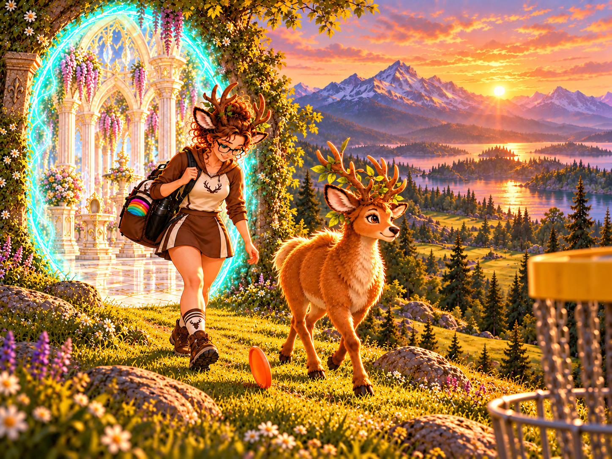
Alisha steps through after Fiona as the orange disc rolls across the grass. The palace grove remains visible through the gate.
Approved in-game dialogue · one line per tap
Alisha: “Please stop rolling before you get us into more trouble!”
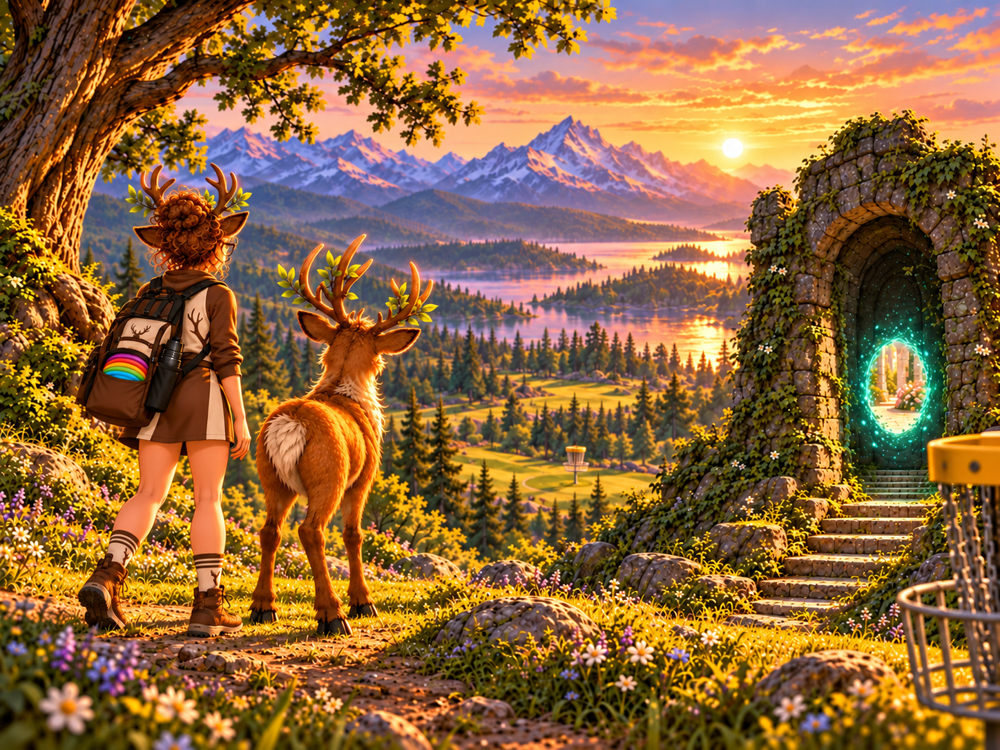
Both turn toward the gate, seen from behind. Its opening shrinks to a small window into the palace grove they just left.
Approved in-game dialogue · one line per tap
Fiona glances back and notices the gate slowly closing behind them.
Fiona: “Oh no… the gate’s almost closed. We’re stuck on this side now!”
Rear view of Alisha and Fiona facing the beautiful disc golf course. Their Chapter 1 ending.
Approved in-game dialogue · one line per tap
The gate closed behind them, leaving the palace on the other side.
Ahead, the unfamiliar path stretched through the trees. Somewhere along it, Alisha’s disc was still rolling.
Alisha: “Well, looks like this is the way to the first basket!”
Fiona: “Let’s find your disc before it finds any more trouble.”
Revised draft — awaiting review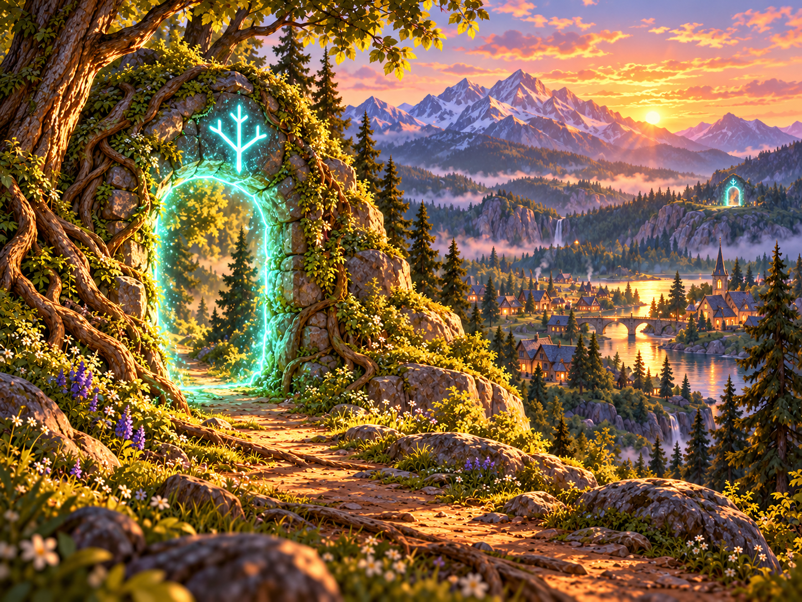
Elsewhere throughout the realm…
The chapter’s last picture: under its line, “To be continued…”; a tap returns to Levels.
The same rune glows at distant gates. No disappearances shown. Reuses the existing realm illustration as a separate coda.
What we take from the original nine
| Original | Use in Chapter 1 |
|---|---|
| 1 · Sprouting Grove | Small, readable three-merge opening in Meet Fiona. |
| 2 · Songbird Chorus | Low-tier pieces plus a higher starter; useful short chains in levels 2 and 5. |
| 3 · Lone Elk | Keep as replay/reference. Its exact-count five-merge traps do not fit this story tutorial. |
| 4 · Crystal Fives | Teach five-for-two once, but simplify its two mandatory five-merges and make recovery clear. |
| 5 · Faraway Grove | Borrow spatial separation and a small pan; avoid the full 16×12 four-goal board. |
| 6 · Hidden Hollow | Staged reveal and forgiving five-merge introduction. Use one consistent gate rule in the new levels. |
| 7 · Rune Gates | Exact item markers, passage gates and checkpoints for the entrance/final passage. |
| 8 · Hidden Cache | Hidden room/pocket, resources revealed by progress; useful for palace rescue. |
| 9 · Crystal Palace | Hub, branch tasks, gate symbols and a final multi-item objective form the larger seven-room rescue. |
Previous levels · collapsed by default in the proposed game UI
All nine original boards remain playable with their current names/rules and separate progress. Preserve definitions and tests. This foldout illustrates the menu direction; it does not run those levels.
Review before implementation
- Does the progression feel right: four forest clearings → six-room approach → seven-room palace rescue → five-space route into the grove?
- Do the two cleanup chains read clearly as tools and fallen wood?
- Approve the safe plate opening as permanent/checkpointed; prototype character spots and bubbles before building the full palace.
- Gate/course dialogue and exact visual landmarks still need writing. Message contents and dog identity can stay open.
Next: approve the flow, then validate exact board inventories and character placement using placeholders. Final sprites and cutscene artwork come after the rough scenes work.
Review artifact only. Rendered illustrations are drafts; no game integration or deployment. C1-10B has an outfit-continuity revision for review. Palace-side polished marble and the C1-21 hilltop landscape are now the continuity anchors. Socket and arch details still need owner review across the renders. Ending dialogue is still a draft. Source: story-review.md.